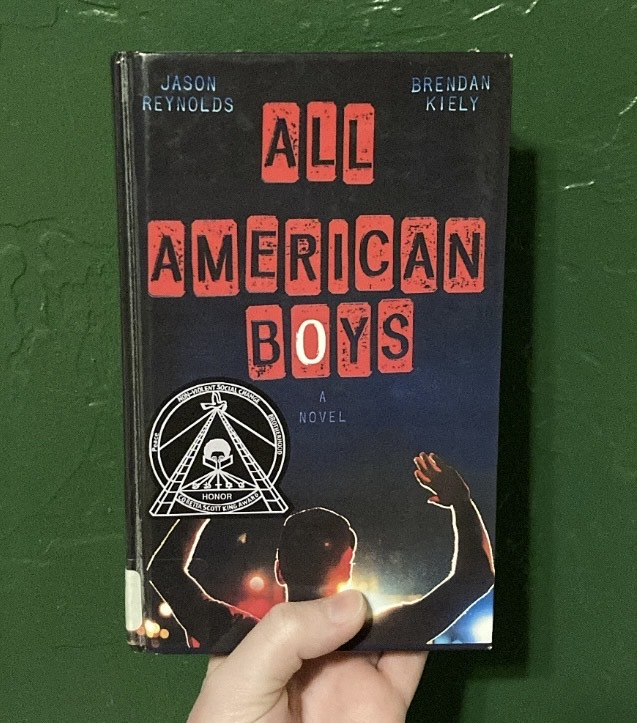
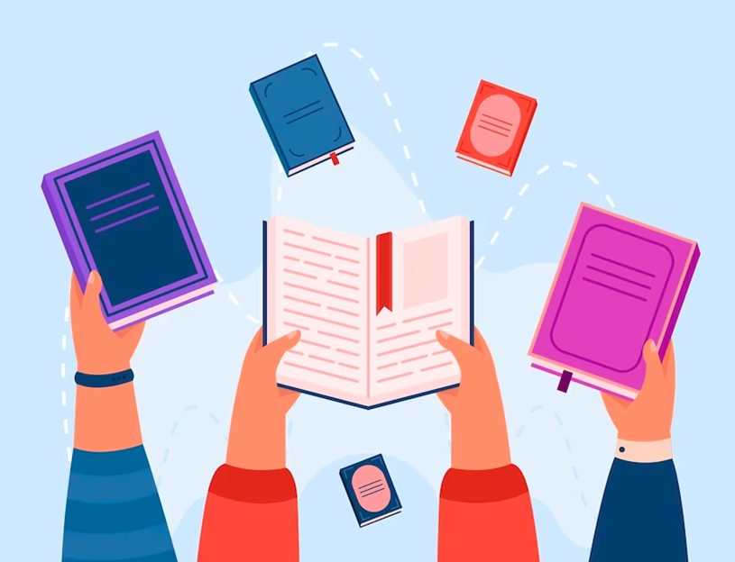
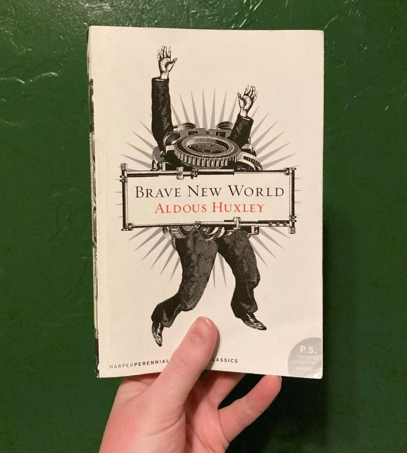

Banned Book Club
Intellectual Freedom
One of the best ways we can learn and grow is through sharing ideas and experiences with one another. We expand our perspectives and develop greater empathy for others when we read other points of view than our own.
Having access to information is a fundamental right. Censorship takes that away. Exercise your intellectual freedom through books!
Read Banned Books
A great way to support intellectual freedom is through reading banned books. Expand your ideas. Challenge your opinions. Learn about others’ experiences.
Reading on your own is a great start, but buddy-reading is also an option. Talk to your friends/family/community and start a book club. There are some great reads that you can discuss with one another after!



Reading Club Book List
While there are plenty of banned books to read, and I encourage you to find what sparks an interest in you, here are a few suggestions that I think are great for book clubs:
"I Know Why The Caged Bird Sings" by Maya Angelou
"Narrative of the Life of Frederick Douglass" by Frederick Douglass
"Looking for Alaska" by John Green
"The Outsiders" by S.E. Hinton
"Brave New World" by Aldous Huxley
"The Bluest Eye" by Toni Morrison
"Bridge to Terabithia" by Katherine Paterson
"All American Boys" by Jason Reynolds
"Between Shades of Gray" by Ruta Sepetys
“The Hate U Give” by Angie Thomas